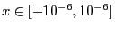
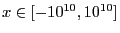
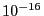

Next: Why scaling and geometry Up: Tolerances and user-scaling Previous: Tolerances and user-scaling
The default values for these primal and dual feasibility tolerances
are  , and the default for the integrality
tolerance is
, and the default for the integrality
tolerance is  . If you choose the range for your
inequalities and variables correctly, you can typically ignore
tolerance issues entirely.
. If you choose the range for your
inequalities and variables correctly, you can typically ignore
tolerance issues entirely.
To give an example, if your constraint right-hand side is on the order
of  , then relative numeric errors from computations
involving the constraint (if any) are likely to be less than
, then relative numeric errors from computations
involving the constraint (if any) are likely to be less than
 , i.e., less than one in a billion. This is
usually far more accurate than the accuracy of input data, or even of
what can be measured in practice.
, i.e., less than one in a billion. This is
usually far more accurate than the accuracy of input data, or even of
what can be measured in practice.
However, if you define a variable , then relative numeric error may be as big as 50% of the variable range.
If, on the other hand, you have a variable , and you are using default primal feasibility tolerances; then what you are really asking is for the relative numeric error (if any) to be less than . However, this is beyond the limits of comparison for double-precision numbers. This implies that you are not allowing any round-off error at all when testing feasible solutions for this particular variable. And although this might sound as a good idea, in fact, it is really bad, as any round-off computation may result in your truly optimal solution being rejected as infeasible.